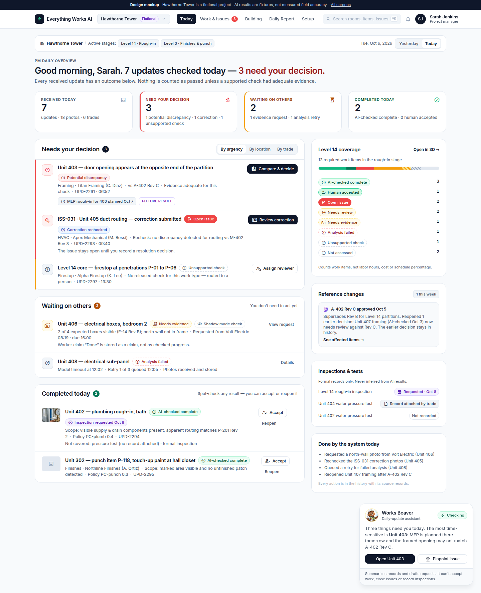
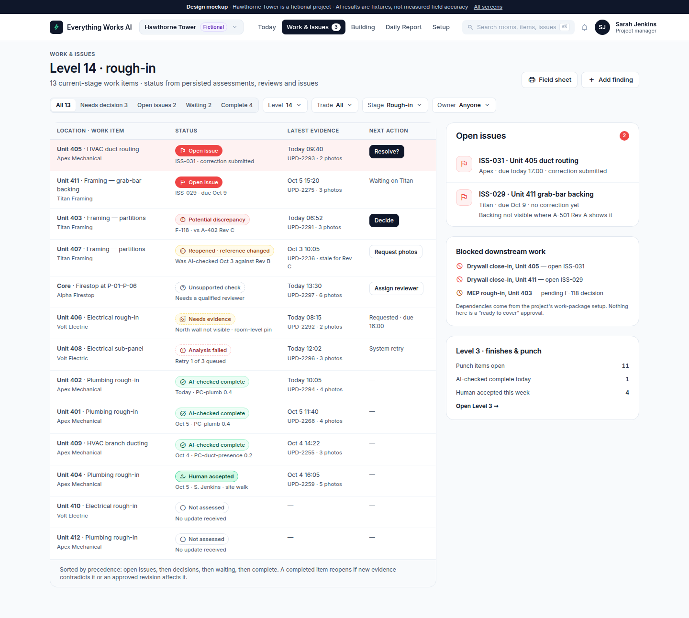
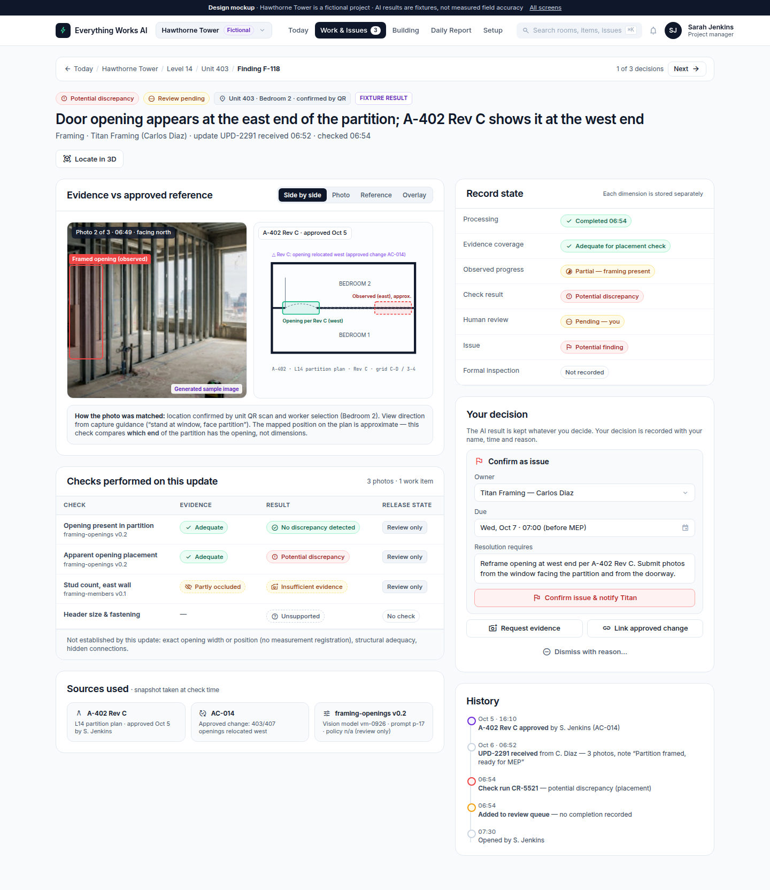
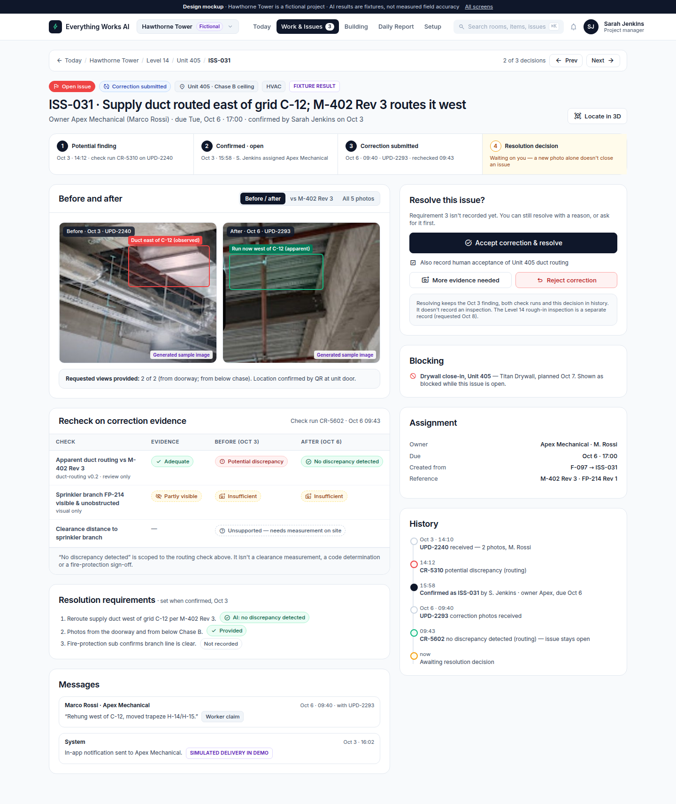
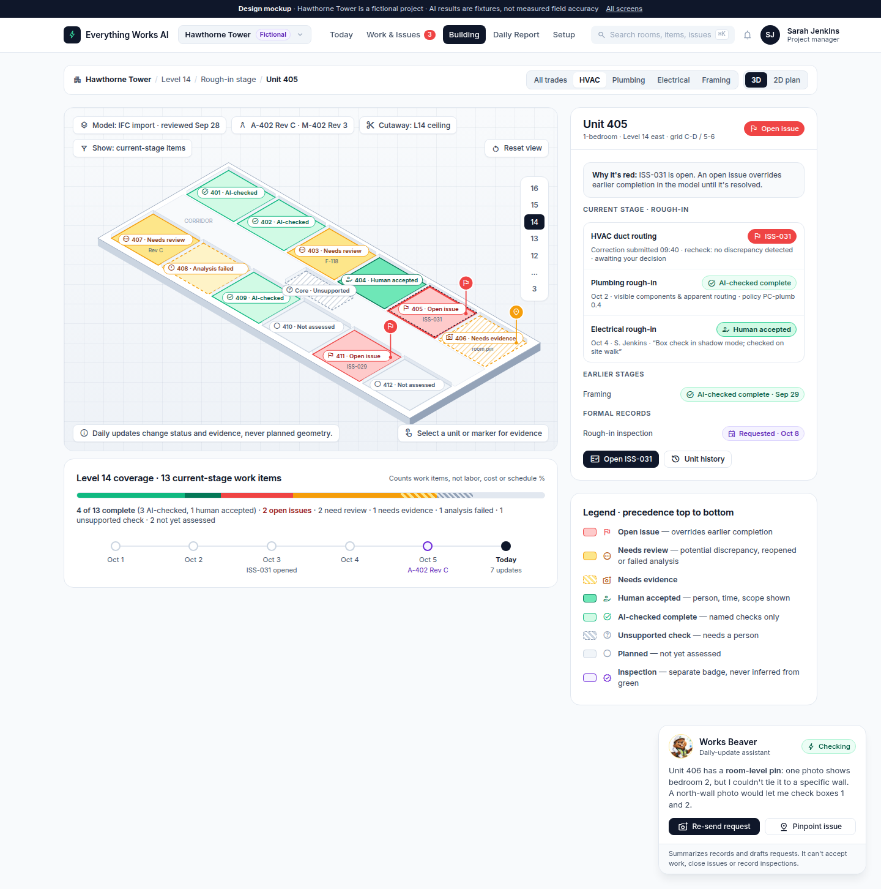
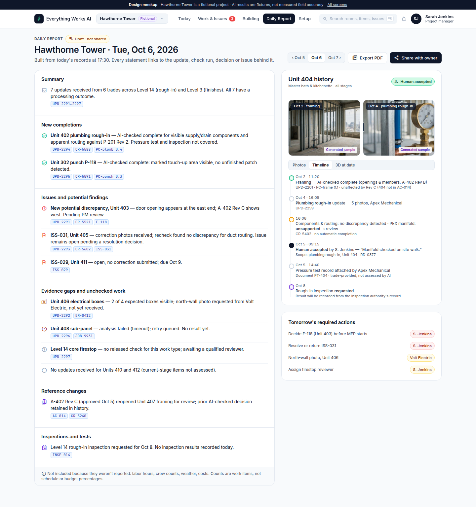
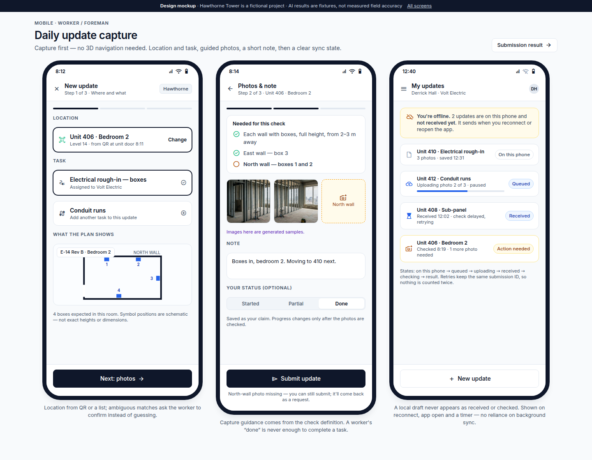
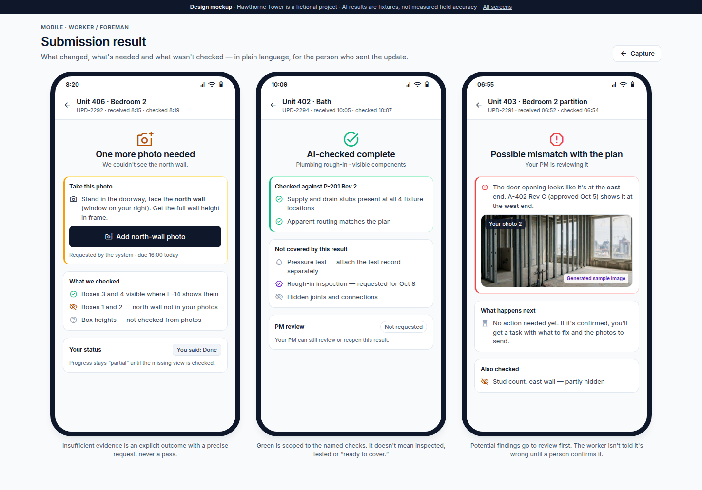
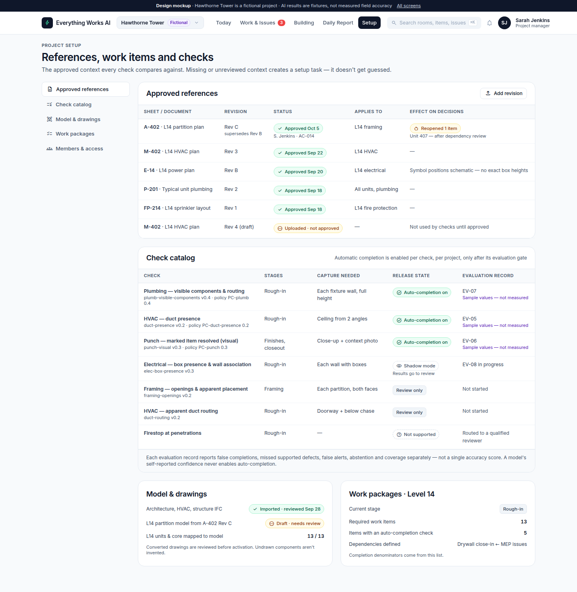
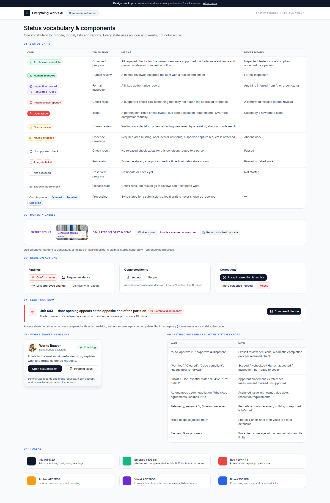

Daily update → check → complete or issue → correct → 3D
The Stitch screens reworked for the October 5 product reset. Static HTML; no backend. See README.md for what changed and why.
Demo story — one day, three outcomes, two stages

Today · PM daily overview
Exceptions inbox: needs your decision, waiting on others, completed today, coverage, reference changes.
Replaces: Today (approvals, communication resolution, navigation flow)
Work & Issues
Every current-stage work item with separate status dimensions, open issues and blocked downstream work.
Replaces: Work & Blockers
Finding review · comparison panel
Photo vs approved reference, checks performed, record state, decision with owner and reason.
Replaces: Approval detail Unit 405
Issue & correction
Lifecycle, before/after evidence, recheck, explicit resolution decision.
Replaces: Unit 405 subcontractor communication resolution
Building · 3D / plan workspace
Status projection with precedence legend, issue pins, room-level pins, coverage with denominator.
Replaces: Building
Daily report & history
Record-linked statements; per-unit history across stages; nothing unreported is inferred.
Replaces: Evidence, Unit 404 spatial progression
Mobile · daily update capture
Location and task, guided photos, worker claim, offline queue and sync states.
New
Mobile · submission result
What was checked, what's needed, what wasn't covered.
New
Project setup
Approved revisions, check catalog with release state, model review, work packages.
New
Component reference
Status vocabulary, honesty labels, decision actions, retired patterns, tokens.
Replaces: Unified component reference guide